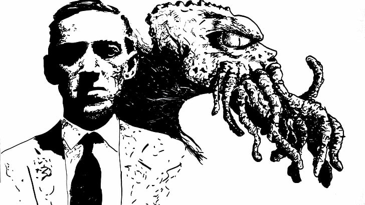
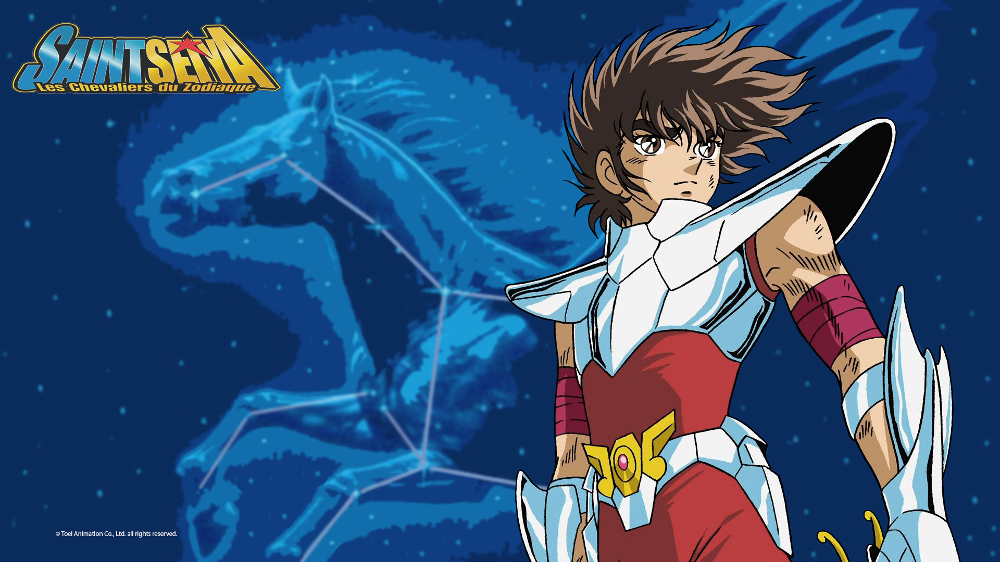
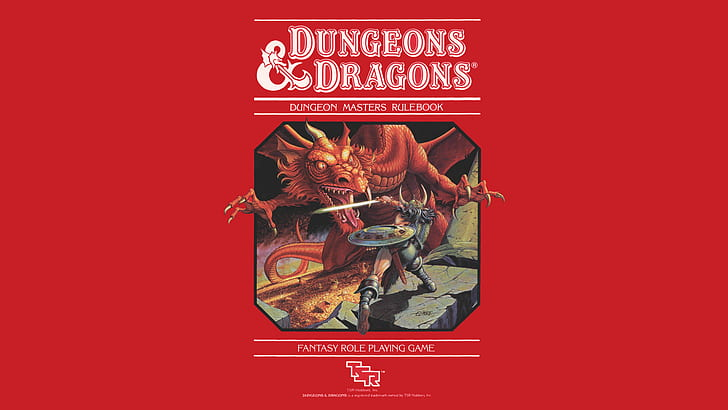
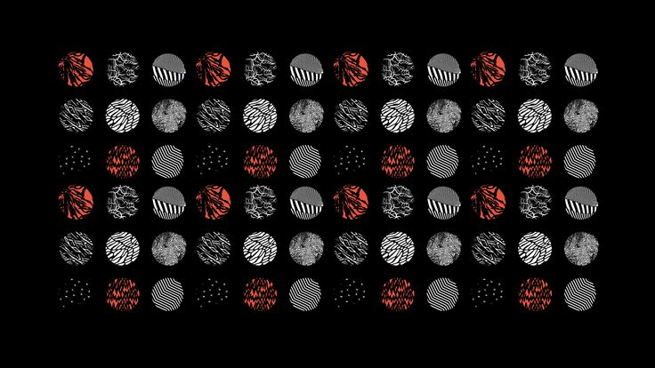
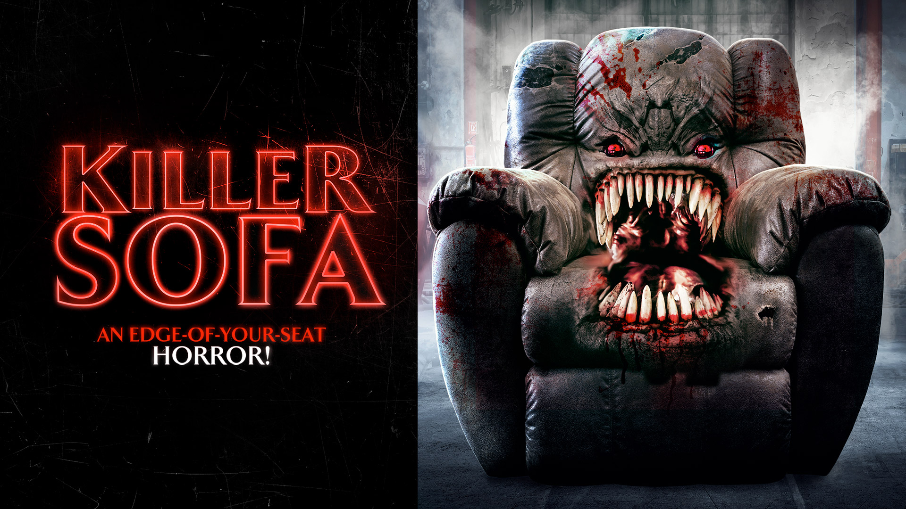
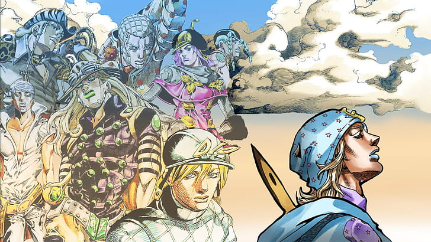
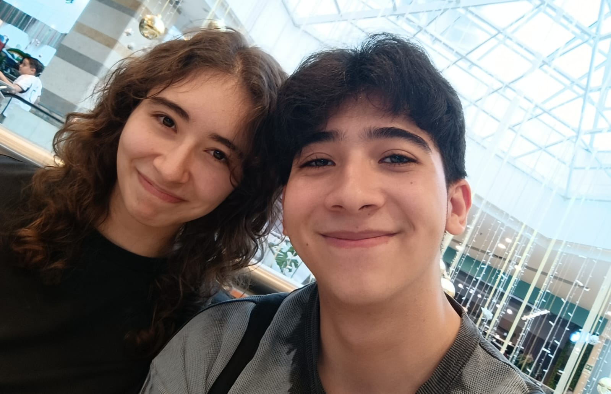

Toda la vida me han gustado los videojuegos, creo que es el hobby que mas tiempo he tenido,
mi genero favorito siempre han sido los JRPG aunque tambien me gustan algunos otros,
en la lista de mis juergos favoritos muy probablemente este: Persona 5 Royal, Nier Automata, Xenoblade Chronicles, Monster Hunter World,
Kingdom Hearts 2.
Y definitivamente mi saga de videojuegos favorita es Pokemon, desde que era chiquito he jugado cada uno de los juegos y
mis juegos favoritos hasta que no saquen uno mejor sera Pokemon Blanco y Negro 2
Tambien desde pequeño me ha gustado mucho leer, me encantaba imaginarme todos los mundos que leia, por eso de pequeño era muy fanatico de los libros de fantasia especialmente todos los que tuvieran algun tipo de ambientacion medieval, sin embargo un dia un amigo me presto un libro de H.P lovecraft y me encanto tanto que comence a leer todos las historias que este habia hecho, volviendose mi autor favorito, aun no termino de leer todos y cada uno pero de momento mi historia favorita es: El caso de Charles Dexter Ward
Desde pequeño me gustaron mucho las series de anime, supongo que habia un patron que hizo que me llamaran la atencion, empece viendo Dragon Ball y Los Caballeros del Zodiaco, Pokemon, Naruto y asi fue creciendo y ya le tenia tanto cariño a este tipo de series que seguia viendo mas y mas y genere una adiccion que ya me ha durado toda mi vida, aunque ya no veo tanto como antes, todavia disfruto ver un buen anime de vez en cuando o uno lo mas generico y simple posible
Adoro jugar Dungeons & Dragons, fue un hobby que surgio en bachillerato cuando en los descansos mi grupo de amigos hizo una campaña y siempre jugabamos en las mesas del restaurante y ahora nos reunimos seguido normalmente en mi casa a seguir con nuestras aventuras, hemos tenido 3 campañas, y adoro crear historias y trasfondos para mis personajes y sumergirme en cada mundo de fantasia que se crea para cada ocasion
Creo que toda mi vida me la habia pasado escuchado musica proveniente de videojuegos, pues me encantaba todo de estos y adoraba jugar juegos con buena musica, hasta que un dia un amigo me hizo 70 diapositivas sobre una banda para que fuera a un concierto con el y esta banda se volvio mi actual banda favorita, estoy hablando de Twenty One Pilots, a la cual de hecho hace unos meses pude ver en el concierto y me encanto
Una de las cosas que mas me encanta es ir a ver peliculas con mis amigos o pareja, sin embargo hay algo raro en especifico con un amigo, ya que hacemos reuniones para ver peliculas pero solo peliculas malas, hemos descubierto tantas aberraciones que es simplemente muy divertido, entre estas esta Velocipastor, Killer Sofa o SharKula
Hubo un momento en mi vida donde empece a disfrutar mas eer manga que ver anime, tal vez pq no tengo paciencia y puedo leer al ritmo que yo quiera en vez de esperar 20 minutos de capitulo, aunque odio cuando ya me pongo al dia y tengo que esperar semanas o meses por algo nuevo, mis mangas favoritos son Jojos Parte 7, Grand Blue y Tokio Ghoul
Sin embargo a pesar de lo mucho que adore hacer cada una de las cosas anteriores, siempre me termino divirtiendo mas cuando estoy con mi novia, ella es mi mejor amiga y mi compañera de aventuras siempre, entonces siempre se que la voy a pasar bien siempre y cuando este con ella, puedo hacer cualquier actividad que ya salio en esta lista pero siempre la disfrutare mas a su lado
